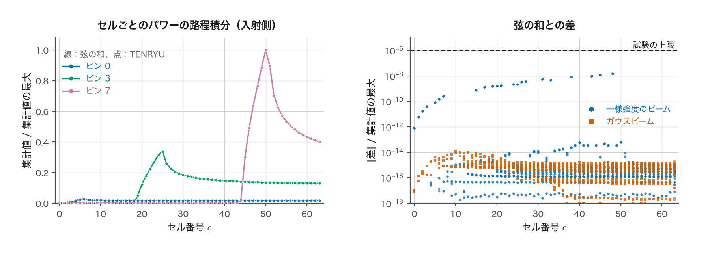
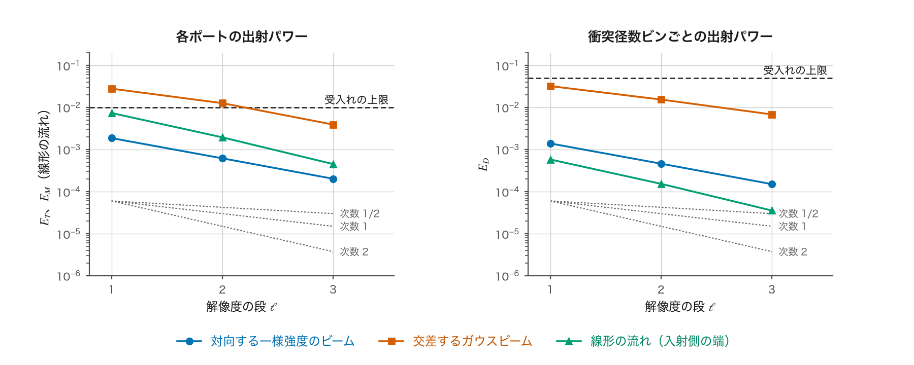

CBET の解析解による検証reference
1D 球対称の CBET（port_section モード。CBET の頁）が解くべき方程式を正しく解いていることを、解析解（closed-form solution）をもつ問題で確かめる。屈折のない一様なプラズマ球に 2 本のビームを入れ、本番の計算と同じレーザーの時間刻みの関数を GPU で 1 回実行し、各ビームの出射パワーと衝突径数ビンごとの出射パワーを解析解と比べる。問題は、交換のない入射場の検査と、交換のある 3 つの問題 — 対向する一様強度のビーム、交差するガウスビーム、線形の流れの中の対向ビーム — である。3 段の解像度で誤差が減ることと、その減り方の次数も確かめる。本頁は、問題の設定、解析解、比べる量、結果、誤差の由来、試験が検査しないことを図とともに説明する。
目的と方針
光線にもとづく CBET のモデルは、コードごとに実装の細部が大きく異なる。Follett ら [1] は、光線のコードにどこまでの精度が可能かが明確でない理由の一つとして、試験問題に使える解析的な結果がきわめて少ないことを挙げている。TENRYU の port_section は、1 本の参照トレースを各ポートへ回転し、区画に複製した光線の各点で他のビームの場から利得を受け取る、という多くの近似の段を含む（CBET の頁の再構成の節）。これらの段が、離散化を細かくした極限で正しい方程式に帰着することを確かめるには、方程式の解が閉じた形で分かっている問題が要る。
そこで、屈折のない一様なプラズマ球を通る平行な光線という、解析解が成り立つ条件を本番の経路の中に作る。この条件では、隣り合う光線が交わらないので火面がなく、場の上限ははたらかない。各点を通る光線は各ビームから 1 本だけなので、火面の近くの寄与もなく、ポンプ乗数は 1 のままである。自分のシートを除く規則も何も除かない。残るのは、セル・光線・衝突径数ビン・区画による離散化の誤差と、反復の許容値と丸めの誤差である。したがって、解像度を上げると出力は解析解に近づかねばならない。
試験は tests/laser/test_cbet_physics_closed_forms.cu にある。プラズマの状態を一様な値で満たし、本番の計算と同じレーザーの時間刻みの関数（laser_step）を 1 回呼ぶ。出射パワーと各光線の記録のパワーは CBET の作業領域から読み、反復の収束やポンプ乗数は本番が出力する [cbet] のログの行から読む。
共通の設定
媒質は半径 \(R=0.02\) cm の一様なプラズマ球である。規格化した電子密度は \(\hat n_e=n_e/n_c=0.2\)（\(n_c\) は臨界密度）、電離度は \(Z=3.5\)、平均の質量数は 6.5、電子温度は 2000 eV、イオン温度は 1000 eV で、流れは線形の流れの問題を除いて 0 である。レーザーの波長は 351 nm、イオン音波の減衰率は \(\alpha_{iaw}=0.2\) である。逆制動輻射の吸収係数は、試験用の設定で 10-30 に置き換えて事実上 0 にする。
ビームは 2 本で、パワーの重みはポート A が 0.1、ポート B が 0.9 である。以下ではパワーの小さいポート A をシード（seed）、大きいポート B をポンプ（pump）と呼ぶ。ポート A はレーザーの波長のままとし、ポート B は角周波数を \(\Delta\omega\) だけ高くする（離調。周波数の高いビームがパワーを渡す）。焦点を \(10^7\) cm の遠方に置くので、各ビームの光線は平行であり、光線の傾きは \(2\times10^{-9}\) 以下である。一様な媒質の中では光線は曲がらず、各光線は球を弦に沿って直進する。衝突径数 \(b\)（光線とビームの軸との距離）の光線の弦の半分の長さは \(\sqrt{R^2-b^2}\) である。
利得の法則は CBET の頁の利得モデルと同じで、シードの光線の強度 \(I_A\) は、ポンプの強度 \(I_B\) を受けて
$$ \frac{dI_A}{ds}=\kappa\,I_B\,I_A,\qquad \kappa=K_0\,\frac{\hat n_e}{1-\hat n_e}\,H\,P(g),\qquad K_0=\frac{\lambda_0e^2}{m_ec^3}\frac{Z}{ZT_e+3T_i},\qquad H=\frac{1+(\hat d_A\cdot\hat d_B)^2}{4} $$に従って増える。ポンプは同じ量を失う。ここで \(s\) はシードの光線に沿う距離、\(\kappa\) は利得係数、\(\lambda_0\) はレーザーの波長、\(e\) と \(m_e\) は電子の電荷と質量、\(c\) は光速、\(T_e,T_i\) は電子温度とイオン温度（erg）、\(H\) は偏光の平均の因子（較正係数 f_cbet = 1）、\(\hat d_A,\hat d_B\) は二つのビームの進む向きの単位ベクトル、\(P(g)\) は規格化した離調量 \(g\) に対するイオン音波の応答関数（CBET の頁の式）である。強度の単位はパワー毎面積である。
解像度の段 \(\ell=1,2,3\) では、セルの数を \(16\cdot2^\ell\)、1 本のビームの光線の数を \(64\cdot2^\ell\)、衝突径数ビンの数を \(2\cdot2^\ell\) とし、すべてを同時に 2 倍にする。区画の数は、二つのビームが同じ軸上にある問題では 16 に固定し（軸のまわりの対称性から、結果は区画の数に依らない）、交差するガウスビームでは \(4\cdot2^\ell\) とする。CBET の反復の許容値は \(10^{-9}\)、反復の上限は 200 回である。
比べる量と受入れの条件
解析解は光線ごと（または平面ごと）の出射の強度 \(I^{\rm out}(b,\varphi)\) を与える。これを試験の参照値にするため、各ビームの出射パワーと、衝突径数ビンと区画ごとの出射パワーを、解析解の積分として求める。ビン \(\beta\) の参照値は、そのビンが受け持つ衝突径数の範囲 \([b_\beta,b_{\beta+1}]\) での \(\int I^{\rm out}\,2\pi b\,db\) である（交差するガウスビームでは、区画 \(m\) の方位角 \(\varphi_m=2\pi m/N_s\) での値を区画の数 \(N_s\) で割る）。積分は 8 点のガウス求積で、区間を 2 倍に分けながら、変化がそのビームの入射パワーの \(10^{-12}\) 倍以下になるまで細かくする。比べる量は次の 3 つである。
$$ E_T=\max_{\text{port}}\left|\frac{P^{\rm out}}{P^{\rm out}_{\rm ref}}-1\right|,\qquad E_D=\frac{1}{P}\sum_{\text{port},\,m,\,\beta}\bigl|P^{\rm out}_{m\beta}-P^{\rm out}_{{\rm ref},m\beta}\bigr|,\qquad E_M=\max_{\text{port}}\left|\frac{\sum_\beta P^{\rm in}_{\beta}}{\sum_\beta P^{\rm in}_{{\rm ref},\beta}}-1\right|. $$ここで \(P^{\rm out}\) は TENRYU が出したビームの出射パワー、\(P^{\rm out}_{\rm ref}\) はその解析解、\(P^{\rm out}_{m\beta}\) は区画 \(m\)・ビン \(\beta\) の光線の出射パワーの和、\(P\) は二つのビームの入射パワーの和である。\(E_T\) は各ビームの出射パワーの相対誤差の大きい方、\(E_D\) はビンと区画への分布の誤差を入射パワーで規格化したものである。\(E_M\) は線形の流れの問題だけで使う量で、\(P^{\rm in}_\beta\) は各光線が入射側のシートの終わり、すなわち最も中心に近い点に達したときのパワーのビン \(\beta\) についての和である（理由は線形の流れの節）。線形の流れの問題では \(E_D\) も入射側の端のパワーで計算する。
受入れの条件は、最も細かい段 \(\ell=3\) で次のとおりである。\(E_T\le0.01\)（線形の流れの問題では \(E_M\le0.01\) も）、\(E_D\le0.05\)、交換の総和（保存の残差）\(|\mathcal R_0|\le0.01P\)。さらに、\(\ell=3\) の \(E_T\) と \(|\mathcal R_0|\) が \(\ell=1\) の値を超えないこと（ごく小さい値では、誤差の見積もりから決まる下限までを許す）と、隣り合う 2 段の \(E_D\) の比から求めた観測の次数 \(p=\log_2(E_D^{(\ell)}/E_D^{(\ell+1)})\) が 0.9 以上であることを求める（次数の根拠は誤差の由来の節）。\(\ell=4\) の実行を加えるのは、\(\ell=3\) の実行で次の段落の前提（反復の収束、ポンプ乗数が 1 であることなど）がすべて成り立ち、かつ次のどちらかに当たるときだけである。一つは、\(\ell=3\) の \(E_T\) が 0.01 を超えるか、\(\ell=1\) の値と上の下限の大きい方を超えるときである（線形の流れの問題では \(E_M\) についても同じ。1 段だけで計算する \(g=0.5,1.5\) の対向ビームでは 0.01 との比較だけ）。もう一つは、次数を求める組に \(\ell=2\) と \(\ell=3\) の組が選ばれ、その次数が 0.9 未満のときである。組は細かい側から調べ（まず \(\ell=2\) と \(\ell=3\)、次に \(\ell=1\) と \(\ell=2\)）、誤差の由来の節に書く条件を満たす最初の組を選ぶ。\(\ell=4\) を加えたときは、上限を \(\ell=4\) で判定し（超えないことを比べる相手は \(\ell=3\) になる）、次数は 4 段から選び直した組で求める。\(\ell=1\) と \(\ell=2\) の組が選ばれて次数が 0.9 未満のときと、条件を満たす組がないときは、\(\ell=4\) を加えずに不合格とする。今回の実行では \(\ell=4\) は要らなかった。
各実行では、解析解が成り立つ前提が本番の出力でも成り立っていることを確かめる。ログの行で、反復が収束したこと、ポンプ乗数が 1 で 1 回で決まったこと、火面の近くの寄与（\(Q^{\rm cp}\) の和）が 0 であること、場の上限がはたらいた点が 0 であること、ポンプ乗数の失敗時の代わりの処理が起きていないことを確かめる。また、プラズマへの沈着が入射パワーの \(10^{-12}\) 倍以下であることを確かめる。今回のすべての実行でこれらが成り立ち、沈着は入射パワーの \(3.0\times10^{-32}\)〜\(3.9\times10^{-32}\) 倍だった。
入射場の検査（交換なし）
交換の前に、交換が使う入射場そのものが正しいことを確かめる。較正係数 f_cbet を 0 にして交換を止め、一様強度のビームの組とガウスビームの組を \(\ell=2\)（64 セル、1 本のビーム当たり 256 本の光線、8 ビン）で計算する。比べる量は 2 つである。一つは各光線（光線の管）の出射パワーで、吸収も交換もないので、打ち出したパワーにポートの重みを掛けた値に \(10^{-12}\) の相対誤差で一致しなければならない。もう一つは、セル \(c\)・シート・ビンごとのパワーの路程積分（区画について足した集計値）である。これは交換の式の \(L_{g,c}\) そのもので、ポンプの場の大きさを決める。参照値は直線の弦の和
である。ここで \(k\) はビン \(\beta\) に属する光線、\(P_k\) はその光線のパワー、\(b_k\) は衝突径数、\(r_c,r_{c+1}\) はセル \(c\) の内側と外側の面の半径で、根号の中が負になる面では根号を 0 と読む。上限は、そのポートとシートの集計値の最大の \(10^{-6}\) 倍である。

tools/site_figures/data/cbet_closed_forms/）。結果は、光線の出射パワーの相対誤差の最大が \(8.8\times10^{-15}\)、集計値の差の最大が、集計値の最大に対して一様強度のビームで \(1.5\times10^{-8}\)、ガウスビームで \(1.4\times10^{-14}\) である（図A）。参照トレースの回転、区画への複製、セルへの集計の段は、交換がないとき直線の弦の幾何を、上限より 2 桁以上小さい誤差で再現する。
交換のある 3 つの問題と解析解
図Bの上段は、3 つの問題の解析解を細かい格子で計算した曲線で、TENRYU の出力ではない。中段と下段は、最も細かい段 \(\ell=3\) の TENRYU の出力を、衝突径数ビン（交差するガウスビームではビンと区画）ごとに参照値と比べたものである。参照値は、解析解の出射の強度（線形の流れの問題では入射側の端の強度）をそのビンの範囲で積分した値である（比べる量の節）。各ビンのパワーは、そのビンに入射したパワー（ポートのパワーに、そのビンに入るパワーの割合を掛け、区画の数で割った値。割合は、一様強度のビームではビンの断面積の割合 \((b_2^2-b_1^2)/r_b^2\)、ガウスビームではビンに入るガウス断面のパワーの割合 \((e^{-2b_1^2/w^2}-e^{-2b_2^2/w^2})/(1-e^{-2r_b^2/w^2})\) である。\([b_1,b_2]\) はビンの衝突径数の範囲、\(r_b\) はビームの半径、\(w\) はくびれの半径）で割って示す。TENRYU と参照値の差は、一様強度のビームと線形の流れの問題ではどのビンでも 0.1 % 以下（最大はそれぞれ \(4.5\times10^{-4}\) と \(7.6\times10^{-4}\)）で、外側のビンほど大きい。交差するガウスビームでは最大 2.9 % で、区画の方位角によって符号が変わる。

tools/site_figures/data/cbet_closed_forms/per_bin/）。対向する一様強度のビーム
二つのビームは同じ軸の上で向かい合い（\(\hat d_A\cdot\hat d_B=-1\)、\(H=1/2\)）、半径 \(0.8R\) の一様強度の断面をもつ。ポート B の角周波数を \(\Delta\omega=2\bar kc_ag\) だけ上げる（\(\bar k\) はプラズマ中の光の波数、\(c_a\) は音速）。対向するビームではビート波の波数が \(|\mathbf{k}_a|=2\bar k\) なので、この \(g\) はCBET の頁の規格化した離調量そのものである。一様な媒質では、1 本の弦の上のポンプとシードの強度の差 \(I_B-I_A\) が弦に沿って一定であり、利得の法則は閉じた形で解ける（Tang の式。Randall ら [2] の式 (2)）。シードの入射の強度を \(I_{A0}\)、ポンプの入射の強度を \(I_{B0}\)、強度の比を \(B=I_{A0}/I_{B0}\)、利得の指数を \(G=2\kappa I_{B0}\sqrt{R^2-b^2}\) とすると、出射の強度は
$$ I_A^{\rm out}=(1-\delta)\,I_{B0},\qquad I_B^{\rm out}=(\delta+B)\,I_{B0},\qquad (1-\delta)(\delta+B)=B\,e^{G\delta} $$であり、\(\delta\) は最後の式の \(0<\delta<1\) の根である（\(\delta I_{B0}\) が、弦に沿って一定の強度の差 \(I_B-I_A\) に当たる）。試験はこの根を 2 分法で \(2^{-60}\) まで求める。ポンプの強度は中心の弦で \(G=2\) となるように選ぶ。\(B=1/9\) なので、中心の弦ではシードが入射の約 4.5 倍に増え、ポンプが約 0.62 倍に減る（図Bの上段の左）。ポンプの減耗を無視すれば \(I_A^{\rm out}=I_{A0}e^G\)（約 7.4 倍）であり、減耗の効果は大きい。
離調は \(g=0.5,1,1.5\) の 3 通りを計算する。\(g\) を変えると応答 \(P(g)\) が変わるが、試験はポンプの強度を \(\kappa I_{B0}R\) が一定になるように選び直すので、3 通りの解析解は同じ形になる。本番の経路では \(g\) は周波数差から求まり、ポンプの強度とは独立に \(\kappa\) に入る。3 通りの誤差は表示の桁まで一致したので、周波数差から離調量への換算と応答の値が \(g\) によらず参照と一致している。
交差するガウスビーム
二つのビームは角度 \(\Theta\)（\(\cos\Theta=0.2928\)、約 73°）で交差し、どちらもくびれの半径 \(w=R/4\) のガウス形の断面をもつ（ビームの半径 \(0.75R\) で切る）。ポート B の角周波数は \(\Delta\omega=\bar k\,|\hat d_A-\hat d_B|\,c_a\) だけ高く、規格化した離調量は \(g=1\)（共鳴）である。屈折のない一様な媒質では、二つのビームの進む向きをともに含む平面（その法線方向の座標を \(y\) とする）ごとに、二つのビームの交換が独立に起こる。McKinstrie ら [3] は、任意の入射の断面に対するこの問題の解を閉じた形で与えた。それを本問題の記号で書くと、平面 \(y\) の上で横方向の位置 \(t\) にある光線の出射の強度は
$$ I_A^{\rm out}=\frac{I_{A0}f\,e^{\kappa I_{A0}E}}{e^{\kappa I_{A0}E}-1+e^{-\kappa I_{B0}E_{\rm tot}}},\qquad I_B^{\rm out}=\frac{I_{B0}f\,e^{-\kappa I_{B0}E}}{e^{\kappa I_{A0}E_{\rm tot}}-1+e^{-\kappa I_{B0}E}}, $$ $$ E(t,y)=\frac{E_{\rm tot}(y)}{2}\Bigl[1+{\rm erf}\Bigl(\frac{\sqrt2\,t}{w}\Bigr)\Bigr],\qquad E_{\rm tot}(y)=w\sqrt{\frac{\pi}{2}}\,e^{-2y^2/w^2},\qquad \kappa=\frac{K_0}{\sin\Theta}\,\frac{\hat n_e}{1-\hat n_e}\,\frac{1+\cos^2\Theta}{4}\,P(1) $$である。ここで \(f=e^{-2b^2/w^2}\) はその光線の位置での断面の形、\(E\) は、相手のビームの光線がこの光線に達するまでに横切った、このビームの光線の断面の形の積分、\(E_{\rm tot}\) はその平面での断面の形の積分の全体である。利得係数の \(1/\sin\Theta\) は、相手のビームの横方向の幅 \(dt\) を通り抜ける経路の長さが \(dt/\sin\Theta\) であることから来る。ポンプの強度は \(\kappa I_{B0}E_{\rm tot}(0)=2\) となるように選ぶ。\(t\) の小さい側のシードの光線は、まだ減耗していないポンプに出会うので約 7.4 倍（\(e^2\)）に増え、\(t\) の大きい側の光線は、手前の光線が減耗させたポンプに出会うので約 3.3 倍にとどまる（図Bの上段の中央）。二つのビームの向きが異なるので、ポンプの場は区画（ビームの軸のまわりの方位角）によって変わる。この問題だけが区画の数についての収束を検査する。
線形の流れの中の対向ビーム
二つのビームは同じ軸の上で向かい合い、周波数は等しい（\(\Delta\omega=0\)）。プラズマは中心から外向きに速さ \(u=2c_ar/R\) で流れる（\(r\) は半径）。弦の上の位置を、最も中心に近い点からの符号付きの距離 \(z\) で測ると、弦の向きへの流れの成分は \(u_z=2c_az/R\) であり、規格化した離調量は衝突径数によらず \(g=\pm2z/R\) になる。弦の向きの流れの成分の大きさが音速に等しい（\(|u_z|=c_a\)）\(|z|=L_e=R/2\) の両側で共鳴 \(|g|=1\) が起こる。このような流れの勾配の中の共鳴による交換は Kruer ら [4] が扱った。一様な媒質では強度の差 \(D=I_A-I_B\) が弦に沿って一定なので、シードの強度は
$$ \begin{gathered} I_A(z)=\Bigl[\frac1D+\Bigl(\frac1{I_{A0}}-\frac1D\Bigr)e^{D\sigma(z)}\Bigr]^{-1},\qquad I_B=I_A-D,\\ \sigma(0)=-\kappa_0L_e\,F\!\Bigl(\frac{\sqrt{R^2-b^2}}{L_e}\Bigr),\qquad F(x)=\int_0^x P(g)\,dg \end{gathered} $$で与えられる。ここで \(\kappa_0=K_0\hat n_e/(2(1-\hat n_e))\) は応答を除いた利得係数、\(\sigma(z)\) はシードの入射点から \(z\) までの \(\kappa_0P(g)\) の積分、\(F\) は応答関数の原始関数である（試験は逆正接を使う閉じた形で計算する）。\(P\) は \(g\) の奇関数なので、弦の前半ではシード（中心へ向かう光）が外向きに進むポンプへパワーを失い、後半では向きが入れ替わって同じだけ取り戻す。ポンプも同様である。そのため、弦を通り抜けた後の出射パワーは入射と等しく（図Bの上段の右）、出射パワーの比較 \(E_T\) はこの問題では交換を検査しない（実測で \(3\times10^{-9}\)）。そこで、入射側のシートの終わり（\(z=0\)）のパワーを比べる量 \(E_M\) を使う。中心の弦では、そこでシードが入射の約 0.38 倍、ポンプが約 0.93 倍まで下がっている。ポンプの強度は \(\kappa_0L_eF(2)I_{B0}=1\) となるように選ぶ。
本番の経路には、プラズマの密度の時間変化による光の周波数の変化（飛行中の周波数の変化）が入っていない（CBET の頁）。この問題の解析解も周波数を一定とした形である。
結果
試験は 2026-11-12 に、GPU（NVIDIA RTX PRO 6000 Blackwell Max-Q）1 基で実行し、4 つの試験の場合はすべて合格した。表 1 は各段の誤差と保存の残差である。
| 問題 | \(\ell\) | \(E_T\) | \(E_M\) | \(E_D\) | \(\mathcal R_0/P\) |
|---|---|---|---|---|---|
| 対向する一様強度のビーム（\(g=1\)） | 1 | 1.87×10-3 | — | 1.40×10-3 | 3.2×10-10 |
| 2 | 6.19×10-4 | — | 4.62×10-4 | 2.6×10-10 | |
| 3 | 2.02×10-4 | — | 1.51×10-4 | 2.4×10-10 | |
| 交差するガウスビーム | 1 | 2.80×10-2 | — | 3.22×10-2 | −3.2×10-3 |
| 2 | 1.27×10-2 | — | 1.54×10-2 | −1.3×10-3 | |
| 3 | 3.92×10-3 | — | 6.83×10-3 | −3.0×10-4 | |
| 線形の流れの中の対向ビーム | 1 | (3.3×10-9) | 7.39×10-3 | 5.81×10-4 | 5.8×10-10 |
| 2 | (3.2×10-9) | 1.95×10-3 | 1.53×10-4 | 5.5×10-10 | |
| 3 | (3.2×10-9) | 4.52×10-4 | 3.55×10-5 | 5.1×10-10 |
対向する一様強度のビームの \(g=0.5\) と \(g=1.5\) は \(\ell=3\) だけを計算し、\(g=1\) と同じ \(E_T=2.02\times10^{-4}\)、\(E_D=1.51\times10^{-4}\) だった（上の節）。交差するガウスビームの粗い段では、ポート A の出射パワーが解析解から 1 % 以上離れた。\(\ell=1\) では \(1.931\times10^{17}\) erg/s（解析解 \(1.879\times10^{17}\) erg/s、+2.8 %）、\(\ell=2\) では \(1.903\times10^{17}\) erg/s（+1.3 %）である。ポート B は \(\ell=1\) でも 1 % 以内である。\(\ell=3\) では両ポートとも 0.4 % 以内に入る。

tools/site_figures/data/cbet_closed_forms/）。観測の次数は \(\ell=2\) と \(\ell=3\) の組で、一様強度のビームが 1.61、ガウスビームが 1.17、線形の流れの問題が 2.11 であり、すべて 0.9 以上である（図C）。ガウスビームの誤差は他の 2 問題より 1 桁大きい。この問題だけが区画の離散化（区画のあいだのポンプの場の補間）を含むが、誤差の内訳は試験の出力からは分けられない。保存の残差 \(\mathcal R_0\) は、二つのビームが同じ軸上にある問題では \(10^{-10}P\) の程度であり、交差するガウスビームでは \(-3.2\times10^{-3}P\) から \(-3.0\times10^{-4}P\) へ解像度とともに減る。後者は、各光線の利得をそれぞれの位置の場から求めるので、シードの得るパワーとポンプの失うパワーが別々の点で計算されることによる（CBET の頁のポンプ乗数の節）。この問題には火面がないのでポンプ乗数は 1 のままであり、残差はそのまま数値損失として記帳される。
誤差の由来と次数
解析解が成り立つ条件では、本番の出力と解析解の差は離散化から来る。主な由来は 2 つである。
- セルごとのポンプの場：シードの標本点が受け取るポンプの場は、ポンプの状態のパワーの路程積分の比 \(L_{q,c}/L^0_{q,c}\) で減耗を表す（CBET の頁の交換の式）。この比はセルと状態ごとに 1 つの値であり、セルの中でのポンプの減耗の変化を平均する。ポンプの光線が球殻に接する付近では、状態が占める範囲が光線に沿って \(\sqrt{2r(\Delta r+\Delta b)}\) 程度まで伸びるので（\(\Delta r\) はセルの幅、\(\Delta b\) はビンの幅）、そこでの誤差はセルとビンの幅について 1 次であり、他の場所では 2 次である。
- 最も中心に近い点の近くの経路：直線の弦の長さを半径で積分すると、被積分関数 \(ds/dr=r/\sqrt{r^2-b^2}\) が最も中心に近い点 \(r=b\) で発散する。本番の経路は、シードの各小区間の経路に沿う積分を、密度を \(\eta_1/r^2+\eta_0\) で表した閉じた形で求め、小区間の 2 つの標本点に半分ずつ持たせる（CBET の頁の標本点の置き方）。この問題の密度は一様なので、閉じた形は弦の長さに一定の値 \(\hat n_e/\sqrt{1-\hat n_e}\) を掛けたものであり、最も中心に近い点を含む小区間でも経路に沿う積分には丸めの誤差しか残らない。残るのは、ポンプの場など標本点で評価する量を 2 点の等しい重みで平均する誤差である。この誤差は、その量が半径について滑らかに変わる小区間では小区間の幅 \(h\) の 2 乗に比例し、最も中心に近い点を含む小区間では \(h\) に比例しうる（そこでは量が半径でなく経路の長さについて滑らかに変わる）。試験は経路の長さの丸めの誤差を、倍精度の丸めの単位と、最も中心に近い点の近くの小区間の式の条件数との積で見積もる。今回の実行では、この見積もりは最大 \(5.0\times10^{-13}\)（相対値）だった。
2 つの由来はどちらも解像度について 1 次の部分をもつので、次数の形式上の値（解像度が十分に高いときの値）は 1 である。試験は次数の下限を、1 より 1 割低い 0.9 とする。1 より高い観測の次数は合格である。次数は、細かい側の組から調べ、両方の段の \(E_D\) が、ほかの誤差（参照解の求積、反復の許容値、丸め）の見積もりの 100 倍以上ある最初の組で計算する。このとき、ほかの誤差が次数を動かす幅は \(\log_2(1.01/0.99)=0.029\) 以下である。今回の実行では、3 つの問題とも \(\ell=2\) と \(\ell=3\) の組が選ばれた。ほかの誤差の見積もりは \(5.9\times10^{-9}\)〜\(9.5\times10^{-9}\) で、最も小さい \(E_D\)（線形の流れの問題の \(\ell=3\)、\(3.6\times10^{-5}\)）でもその約 6000 倍ある。
誤らせた参照による対照
比べ方が係数の誤りを見分けられることを確かめるため、解析解の係数を 1 つずつ誤らせた参照（負の対照、negative control）を作り、\(\ell=3\) の同じ本番の出力と比べる。誤らせた参照との差 \(E_{\rm alt}\) は、受入れの上限と本番の誤差の 5 倍の大きい方以上でなければならない。比べる量は、一様強度のビームとガウスビームでは \(E_T\)（区画の向きの対照だけ \(E_D\)）、線形の流れの問題では \(E_M\) である。
| 問題 | 誤らせ方 | \(E_{\rm alt}\) | 必要な値 |
|---|---|---|---|
| 対向する一様強度のビーム | 減衰率 \(\alpha_{iaw}\) を 2 倍にする | 0.745 | 0.01 |
| 偏光の因子 \(H\) を 1/2 から 1 にする | 0.724 | 0.01 | |
| 温度の因子と音速の \(ZT_e+3T_i\) を \(ZT_e+T_i\) にする | 0.752 | 0.01 | |
| 密度の因子 \(\hat n_e/(1-\hat n_e)\) を \(\hat n_e/\sqrt{1-\hat n_e}\) にする | 0.102 | 0.01 | |
| 離調量に \(\sqrt{1-\hat n_e}\) を掛ける（真空中の波数を使う誤り） | 0.752 | 0.01 | |
| 離調量の符号を反転する | 18.6 | 0.01 | |
| ポンプの減耗を無視する（\(I_A^{\rm out}=I_{A0}e^G\)） | 0.304 | 0.01 | |
| 交差するガウスビーム | 区画の方位角の向きを反転する（\(E_D\) で比べる） | 0.267 | 0.05 |
| 利得係数の \(1/\sin\Theta\) を \(1/\sin(\Theta/2)\) にする | 0.348 | 0.0196 | |
| 離調量を 1 から \(\sin(\Theta/2)\) にする（ビート波の波数を対向の場合の \(2\bar k\) とする誤り） | 2.20 | 0.0196 | |
| 線形の流れの中の対向ビーム | \(\sigma\) の符号を反転する | 0.863 | 0.01 |
| 共鳴の位置 \(L_e\) を半分にする | 0.355 | 0.01 | |
| \(L_e\) を、飛行中の周波数の変化を含む形 \(L_e/(1+3\hat n_e/(2(1-\hat n_e)))\) にする | 0.203 | 0.01 |
13 通りすべてが必要な値を超える（表 2）。最も差の小さい密度の因子の対照でも、必要な値の 10 倍である。したがって、本番の出力と解析解の一致は、温度・密度・偏光・減衰・離調・幾何の各因子の誤りを見分けられる精度にある。最後の対照は、飛行中の周波数の変化が入ると共鳴点までの距離が 1/1.375 になることに対応し、その変化が今の本番の経路に入っていないことを確かめる。
試験が検査しないこと
この試験は解析解が成り立つ条件だけを使うので、次の事柄は検査しない。
- 密度の勾配による屈折と、それが作る火面。火面での場の上限、火面の近くの寄与、ポンプ乗数がはたらく場合（これらは CBET の頁の検証の節に挙げた別の試験が個別に検査する）。
- 吸収と交換の相互作用（この試験は吸収を止める）。
- プラズマの時間変化による飛行中の周波数の変化（本番の経路にも入っていない）。
- 周波数差の分のパワー（Manley–Rowe の不足分）の扱いと、運動論的なイオン音波の応答。
- 3 本以上のビームが同時に減耗する場合。
ビンと区画ごとの値は一つずつには判定せず、判定に使うのは分布の誤差 \(E_D\) だけである。試験は、環境変数 TENRYU_CBET_CLOSED_FORMS_DUMP に書き出し先のディレクトリを指定したときに、各段のビンと区画ごとの TENRYU の値と参照値を CSV に書き出す。図Bの中段と下段は、この出力から描いた。
参考文献
- R. K. Follett et al., "Validation of ray-based cross-beam energy transfer models," Phys. Plasmas 29, 113902 (2022). doi:10.1063/5.0123462
- C. J. Randall, J. R. Albritton, and J. J. Thomson, "Theory and simulation of stimulated Brillouin scatter excited by nonabsorbed light in laser fusion systems," Phys. Fluids 24, 1474 (1981). doi:10.1063/1.863551
- C. J. McKinstrie, V. A. Kanaev, V. T. Tikhonchuk, R. E. Giacone, and H. X. Vu, "Three-dimensional analysis of the power transfer between crossed laser beams," Phys. Plasmas 5, 1142 (1998). doi:10.1063/1.872645
- W. L. Kruer, S. C. Wilks, B. B. Afeyan, and R. K. Kirkwood, "Energy transfer between crossing laser beams," Phys. Plasmas 3, 382–385 (1996). doi:10.1063/1.871863